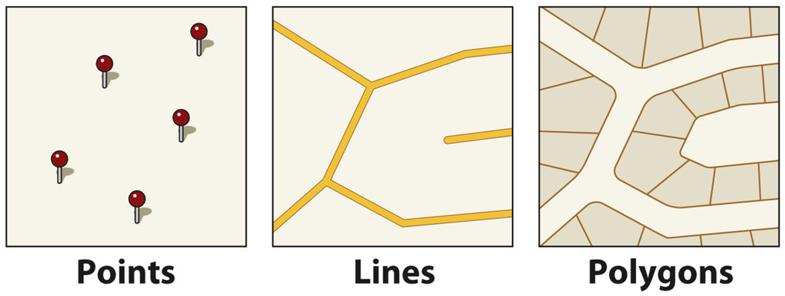
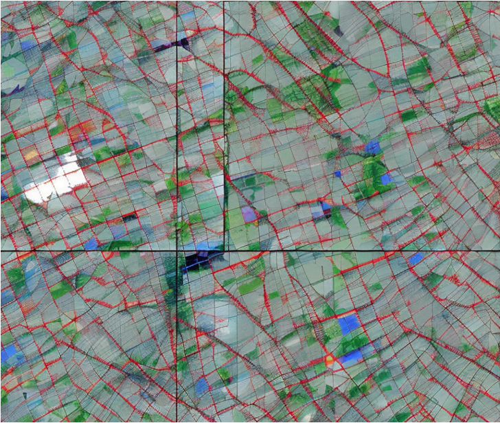
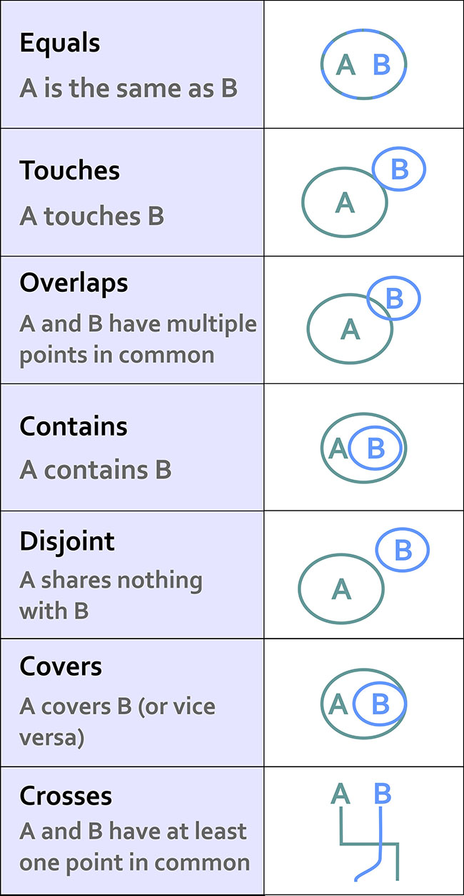
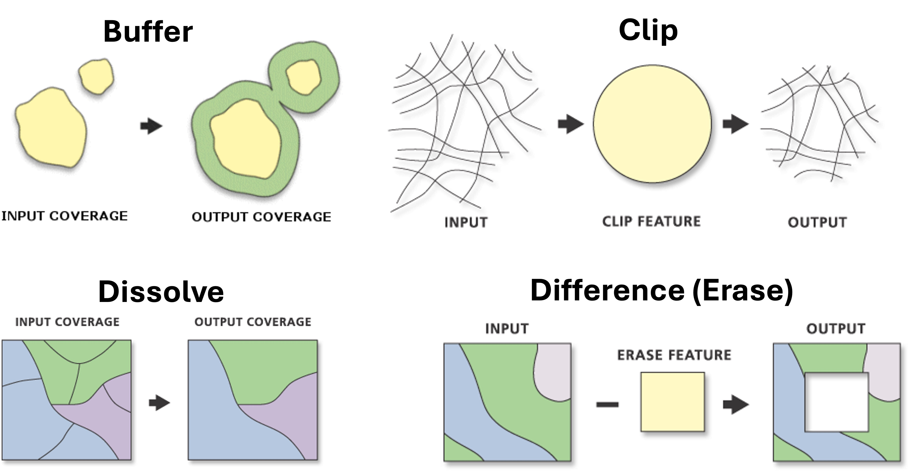

2.4 Geospatial Data
GIS Fundamentals, Vector & Raster Analysis in Python
![]()
March 16, 2025
Today’s Lecture
- What is GIS?
- Types of maps
- Vector and raster data
- File formats and CRS
- Working with
geopandas - Spatial relationships and joins
- Vector tools (buffer, clip, dissolve, erase, intersect)
- Raster basics with
rasterio - Practical exercise: NZ regional data
What is GIS?
- Geographic Information Systems
- A computer system for capturing, storing, checking, and displaying data related to positions on Earth’s surface
- Roger Tomlinson coined the term GIS
- All data in GIS are georeferenced, meaning each feature has:
- Attribute: what it is (name, type, value)
- Spatial information: where it is (coordinates, location)
GIS Example Questions
Here are just some of the questions that GIS allows us to explore with crime data:
- Where are the most vulnerable communities located?
- Why do crimes occur in one area and not another?
- How do offenders travel to the crime location?
- Where are there more or less stop and search than we would expect?
Reference vs Thematic Maps
- Reference Maps: communicate location on static data points
- To “pin point” data on a map
- Descriptive
- Thematic Maps: highlight a spatial relationship
- To “study a theme” within a map
- Explanatory
Rail Maps
- Reference maps because they show the location of stations and each line
- Thematic maps because they can predict life expectancy, poverty and median house prices
Other cases
- The visualisation of road networks to improve road safety measures is a…
- The visualisation of the earth’s surface showing elevation is a…
- Navigation tools such as Google Maps can be classed as…
Geospatial Data Types
- Vector: points, lines and polygons

- Raster: imagery or satellite data formed from a grid of pixels

File Formats
- Shapefile (.shp): traditional GIS format requiring multiple companion files (.shx, .dbf, .prj)
- GeoTIFF (.tif): standard raster format with embedded CRS
- GeoJSON (.geojson): web-friendly, human-readable, based on JSON
- GeoPackage (.gpkg): modern SQLite-based format for vector and raster
- KML/KMZ: used primarily in Google Earth
- CSV + coordinates: plain text georeferenced via lat/lon columns
- GPX: GPS Exchange Format for routes, tracks, waypoints
- NetCDF / HDF5: multi-dimensional arrays for climate and earth observation
Python Tools for Geospatial Data
Vector Data
| Package | Level | Description |
|---|---|---|
shapely |
Low-level | Handles individual geometry objects (points, lines, polygons) |
geopandas |
High-level | Works with GeoSeries and GeoDataFrames; built on shapely |
Raster Data
| Package | Focus | Description |
|---|---|---|
rasterio |
Simple rasters | Uses numpy arrays + metadata dictionary (CRS, transform, etc.) |
xarray |
Complex rasters | Uses xarray.Dataset and DataArray; ideal for NetCDF and multi-band |
Projection Methods
- Moving from the 3D to the 2D
- Cylindrical
- Conical
- Planar

Distortion
The misrepresentation of:
- Area
- Shape
- Distance
- Direction of points
Every projection preserves some properties at the expense of others.
Coordinate Reference Systems (CRS)
- EPSG:4326 (WGS 84): latitude and longitude in degrees; default for GPS; unsuitable for distance/area calculations
- EPSG:3857 (Web Mercator): used by Google Maps and OpenStreetMap; units in metres but distorts areas at high latitudes
- EPSG:2193 (NZTM): New Zealand Transverse Mercator; metres; best choice for NZ analyses
Important
Always check and match CRS when combining datasets. Mixing CRS will produce incorrect results!
Getting Started with geopandas
iso_a3 name continent pop_est gdp_md_est geometry
AFG Afghanistan Asia 34124811 64080 POLYGON ((61.21082 ...
AGO Angola Africa 29310273 189000 MULTIPOLYGON (((23.9...
ALB Albania Europe 3047987 33900 POLYGON ((21.02004 ...geopandas.geodataframe.GeoDataFrameWhat is a GeoDataFrame?
- Just like a DataFrame but with a special
geometrycolumn
- Access individual geometries:
- Quick mapping:
Leveraging pandas Operations
Creating Point Data from a Dictionary
data = {
"Name": ["New York City", "São Paulo", "Tokyo", "Lagos", "Sydney"],
"Population": [8419600, 12325232, 13929286, 15000000, 5312163],
"Latitude": [40.7128, -23.5505, 35.6895, 6.5244, -33.8688],
"Longitude": [-74.0060, -46.6333, 139.6917, 3.3792, 151.2093]
}
cities_df = pd.DataFrame(data)
gdf = gpd.GeoDataFrame(
cities_df,
geometry=gpd.points_from_xy(
cities_df['Longitude'],
cities_df['Latitude']
),
crs='EPSG:4326'
)Converting CRS
- Use
to_crs()to reproject
# Check current CRS
print(countries.crs)
# Reproject to Mercator
no_antarctica = countries.loc[countries["name_long"] != "Antarctica"]
countries_mercator = no_antarctica.to_crs(epsg=3395)- For distance and area calculations: use a projected CRS in metres (e.g. EPSG:2193 for NZ)
- For web mapping: use EPSG:3857
- For spatial operations: ensure all datasets share the same CRS
Spatial Relationships
equalscontainscrossesdisjointintersectsoverlapstoucheswithincovers

Example: Which Country Contains New York?
cities_url = "https://raw.githubusercontent.com/dataandcrowd/GISCI343/main/docs/Lecture03/data/ne_110m_populated_places.gpkg"
cities = gpd.read_file(cities_url)
new_york = cities.loc[cities["name"] == "New York"].geometry.squeeze()
type(new_york) # shapely.geometry.point.Point
countries.contains(new_york)
countries.loc[countries.contains(new_york)]Your Turn
- Use the same code to find Auckland
Spatial Join sjoin
- Merging attributes from two GeoDataFrames based on their spatial relationship
joined = gpd.sjoin(
cities,
countries,
predicate="within",
how="left",
lsuffix="city",
rsuffix="country",
)
joined.head() name_city geometry index_country iso_a3 name_country continent pop_est gdp_md_est
0 Vatican City POINT (12.45339 41.90328) 79.0 ITA Italy Europe 62137802 2221000
1 San Marino POINT (12.44177 43.93610) 79.0 ITA Italy Europe 62137802 2221000
2 Vaduz POINT (9.51667 47.13372) 9.0 AUT Austria Europe 8754413 416600Filtering and Plotting Joined Data
Vector Tools

Vector Tools in Python
import geopandas as gpd
from shapely.geometry import Polygon, Point, LineString
gdf.buffer(distance) # Buffer
gpd.clip(gdf, mask) # Clip
gpd.overlay(A, B, how='difference') # Difference (Erase)
gdf.dissolve(by='region') # Dissolve
gpd.overlay(A, B, how='intersection') # Intersect
pd.concat([gdf1, gdf2], ignore_index=True) # MergeBuffer and Overlay Example
Clip Example
Intersect Example
# Find the parts of Africa within 250km of a city
intersection = gpd.overlay(africa, buffered_cities, how="intersection")
fig, ax = plt.subplots(figsize=(8, 8))
africa.plot(ax=ax, facecolor="lightgrey", edgecolor="black")
intersection.plot(ax=ax, facecolor="coral", edgecolor="black", alpha=0.6)
ax.set_axis_off()
ax.set_aspect("equal")Dissolve Example
Choropleth Maps
Classification schemes divide continuous data into discrete classes for mapping:
import mapclassify as mc
fig, ax = plt.subplots(figsize=(8, 8))
pop23.plot(
ax=ax,
column="VAR_1_23",
edgecolor="black",
linewidth=0.5,
legend=True,
legend_kwds=dict(loc="lower right", fontsize=10),
scheme="FisherJenks",
cmap="viridis"
)
ax.set_title("Fisher Jenks: k = 5")
ax.set_axis_off()
ax.set_aspect("equal")Interactive Maps
Raster Data
So far we have been working mainly with vector data using geopandas: lines, points, polygons
The basemap tiles we have been using are an example of raster data
- Raster data:
- Gridded or pixelated
- Maps easily to an array
- Continuous rasters: satellite imagery, DEMs, canopy height from LiDAR
- Categorical rasters: land cover maps, snowcover masks
Raster: Resolution, Extent, Multi-band
- Resolution: the spatial distance a single pixel covers on the ground
- Extent: the bounding box covering the entire raster footprint
- Colour images are multi-band rasters
- Each band measures light reflected from different parts of the electromagnetic spectrum
The Raster Format: GeoTIFF
- A standard
.tifimage with additional spatial information embedded:- Geotransform (extent, resolution)
- Coordinate Reference System (CRS)
- NoData values
- Tools: GDAL (low-level) vs
rasterio(Pythonic, user-friendly)
Getting Started with rasterio
Common Raster Operations
- Slope: identifies steepness at each cell using a moving window (typically 3x3)
- Mask raster by vector boundaries: clips a raster to the extent of a vector boundary
- Zonal statistics: calculates summary statistics on raster cell values within zones defined by a vector dataset
Modifiable Arial Unit Problem (MAUP)
MAUP refers to the cartographic representation of data whose attributes are significantly influenced by the spatial scale used
Two key Aspects:
- Scale Effect: Changing the size of the spatial units (e.g., from neighbourhoods to districts) can alter statistical results, such as means or totals.
- Zoning Effect: Altering the shape or configuration of spatial units, even if the scale remains constant, can also impact results.
Scale Effect & Zoning Effect

Gerrymandering

Your Turn: NZ Regional Data
Go to your web book and follow the steps below using the 2023 population data:
pop23 = gpd.read_file(
'https://raw.githubusercontent.com/dataandcrowd/GISCI343/main/docs/Lecture03/data/pop23.gpkg'
)- Calculate the centroid of each region
- Measure distances from Wellington
- Classify total population using Jenks natural breaks (k = 5)
- Dissolve regions by North and South Islands
- Calculate total population density by region
Summary
- GIS = Attribute + Location: everything is georeferenced
- Vector vs Raster: vector for discrete features (points, lines, polygons); raster for continuous surfaces (grids of pixels)
- Reference vs Thematic Maps: reference = location/navigation; thematic = patterns/relationships
- Projections and CRS: 3D to 2D creates distortion; use EPSG codes (4326, 3857, 2193)
- MAUP: scale and zoning effects influence results
- Use vector tools (
buffer,clip,dissolve,overlay,sjoin) to analyse discrete features - Use raster tools (slope, masking, zonal statistics) to explore continuous surfaces
geopandasandrasteriobring these together through code-driven, reproducible workflows
Thanks!
Q & A